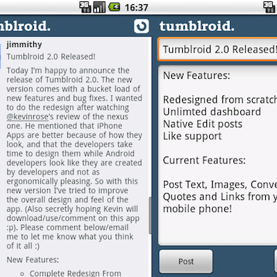

Tumblroid was one of the first Tumblr apps on android
Before they released their own client, tumblroid was the number one tumblr application on the android market. Available in a full paid version and a free lite version, it has achieved over 60 thousand downloads. Tumblroid was also used as part of a marketing campaign when LG launched their Optimus phone.
Click here to visit my blog and see the history of Tumblroid